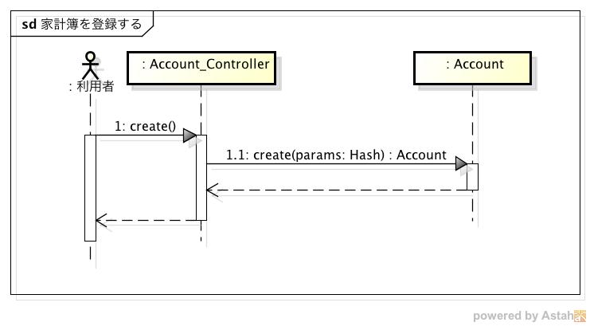
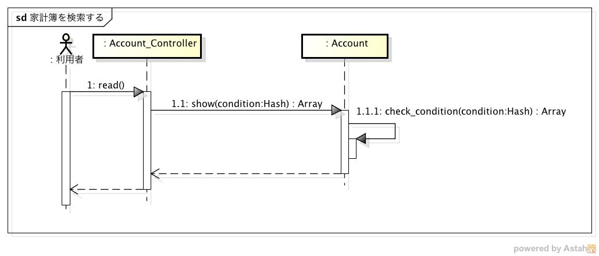
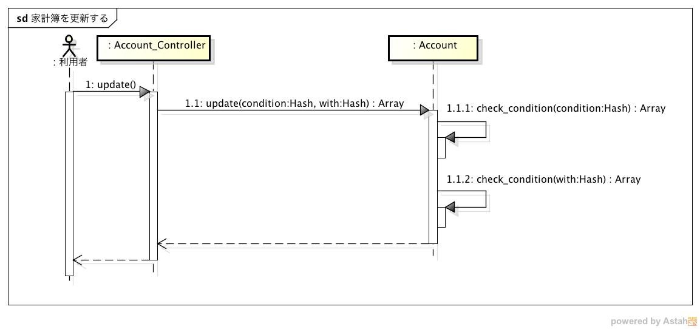
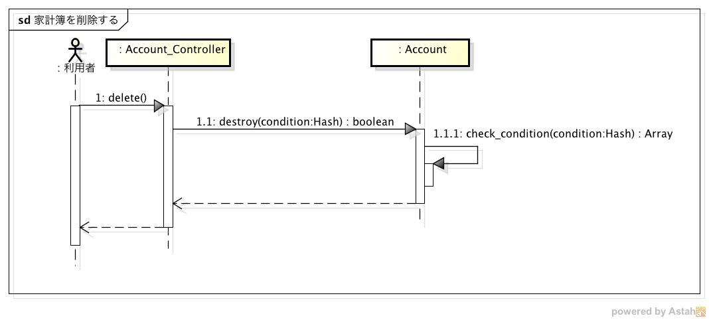
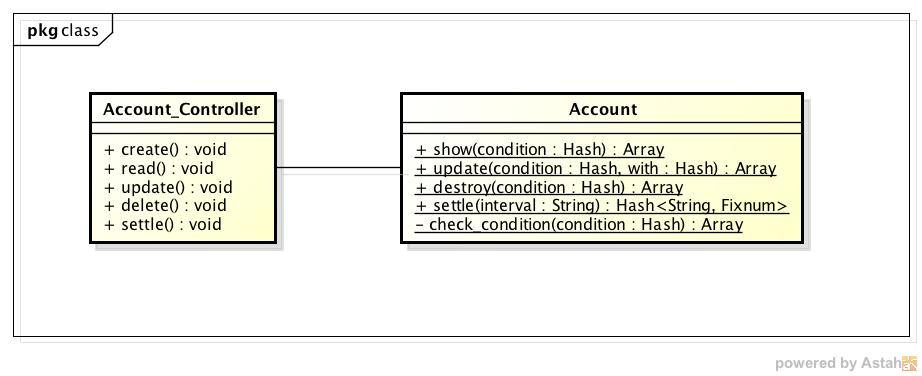

内部設計仕様¶
シーケンス¶
家計簿を登録する¶
Viewer, Registerからのリクエストを受信すると，Accounts_Controllerクラスのcreateメソッドを実行する
Accountクラスのcreateメソッドを実行して家計簿を登録する
createメソッドの実行結果に基づいてそれぞれ以下の処理を行う
Accountクラスのインスタンスを取得した場合
3-1. Viewer, Registerにステータスコード201を送信する
例外が発生した場合
3-1. Viewer, Registerにエラーコードとステータスコード400を送信する
家計簿を検索する¶
Viewerからのリクエストを受信すると，Accounts_Controllerクラスのreadメソッドを実行する
Accountクラスのshowメソッドをパラメータを引数にして実行する
check_conditionを実行し，その結果に基づいてそれぞれ以下の処理を行う
空配列の場合
3-1. whereメソッドを実行して家計簿を取得する
3-2. Viewerに検索結果とステータスコード200を送信する
空配列でない場合（不正なパラメータがある場合）
3-1. Viewerにエラーコードとステータスコード400を送信する
家計簿を更新する¶
Viewerからのリクエストを受信すると，Accounts_Controllerクラスのupdateメソッドを実行する
Accountクラスのupdateメソッドをパラメータを引数にして実行する
check_conditionを実行し，その結果に基づいてそれぞれ以下の処理を行う
空配列の場合
3-1. whereメソッドを実行して家計簿を取得する
3-2. 取得した家計簿それぞれに対して，updateメソッドを実行して家計簿を更新する
3-3. Viewerに更新結果とステータスコード200を送信する
空配列でない場合（不正なパラメータがある場合）
3-1. Viewerにエラーコードとステータスコード400を送信する
家計簿を削除する¶
Viewerからのリクエストを受信すると，Accounts_Controllerクラスのdeleteメソッドを実行する
Accountクラスのdestroyメソッドをパラメータを引数にして実行する
check_conditionを実行し，その結果に基づいてそれぞれ以下の処理を行う
空配列の場合
3-1. whereメソッドを実行して家計簿を取得する
3-2. 取得した家計簿それぞれに対して，deleteメソッドを実行して家計簿を削除する
3-3. Viewerにステータスコード204を送信する
空配列でない場合（不正なパラメータがある場合）
3-1. Viewerにエラーコードとステータスコード400を送信する
収支を見る¶

Viewerからのリクエストを受信すると，Accounts_Controllerクラスのsettleメソッドが実行される
パラメータ”interval”をチェックし，その結果に基づいてそれぞれ以下の処理を行う
daily or monthly or yearlyの場合
3-1. intervalに従って収支を計算する
3-2. Viewerに計算結果とステータスコード200を送信する
それ以外の場合
3-1. Viewerにエラーコードとステータスコード400を送信する
クラス¶
- Accounts_Controller: リクエストを処理するコントローラ
- create: 家計簿を登録するメソッド
- read: 家計簿を検索するメソッド
- update: 家計簿を更新するメソッド
- delete: 家計簿を削除するメソッド
- settle: 収支を計算するメソッド
- Account: Accountsテーブルを操作するモデル
- show: レコードを取得するメソッド
- update: レコードを更新するメソッド
- destroy: レコードを削除するメソッド
- settle: 収支を計算するメソッド
- check_condition: 家計簿の検索条件をチェックするメソッド